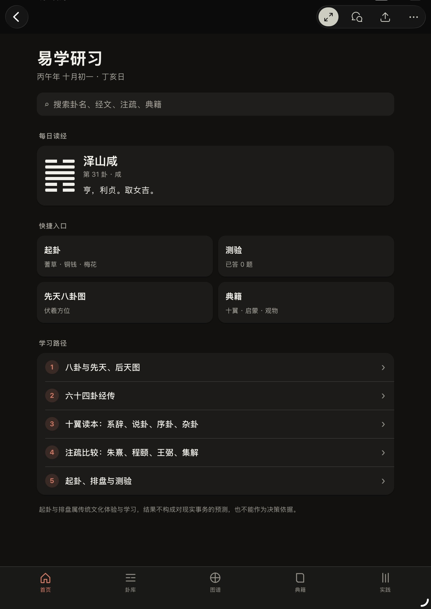
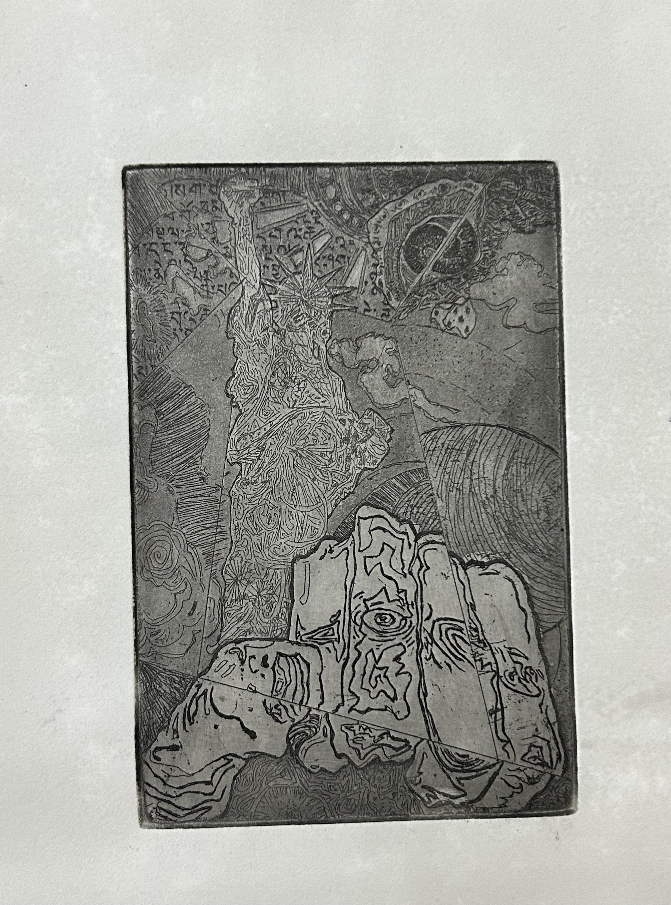
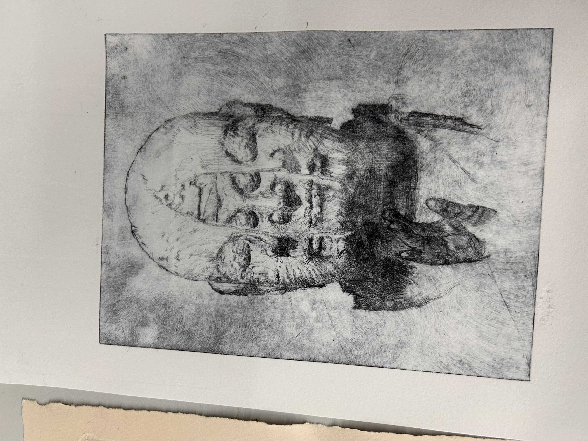
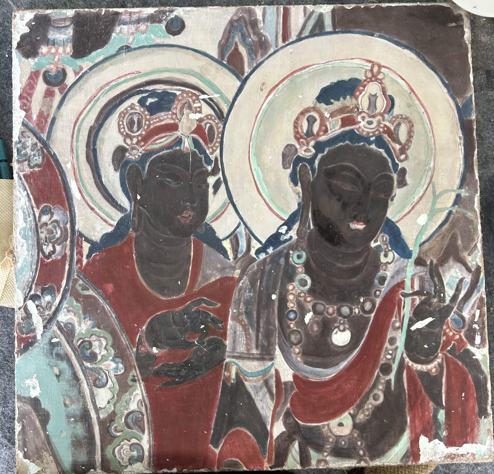
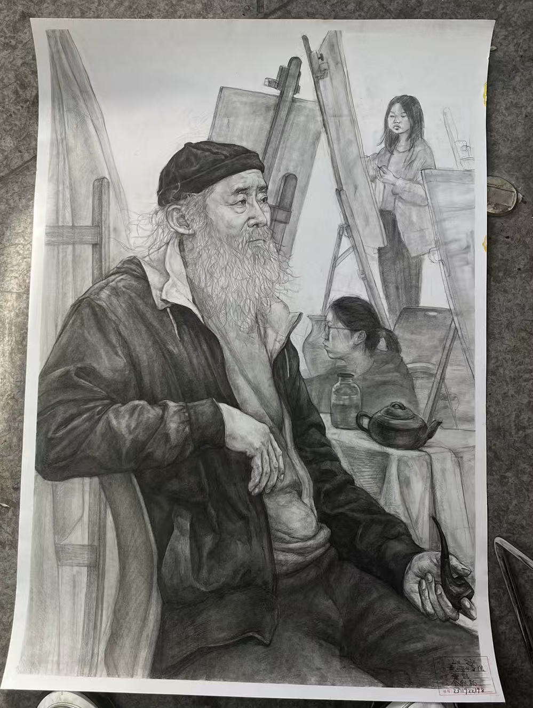
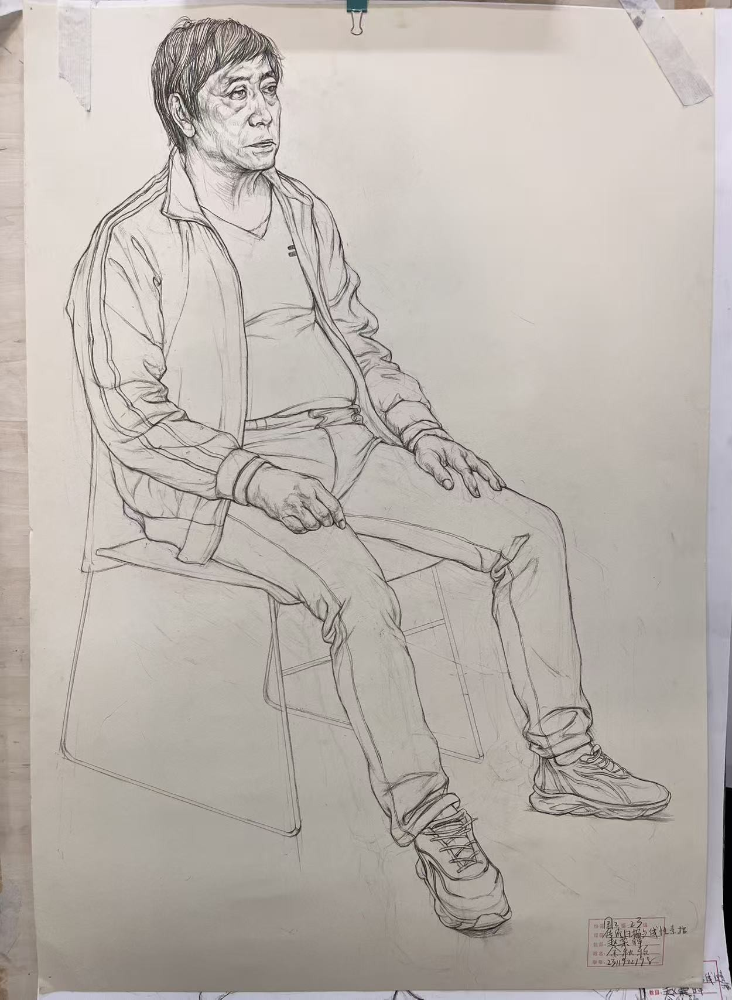
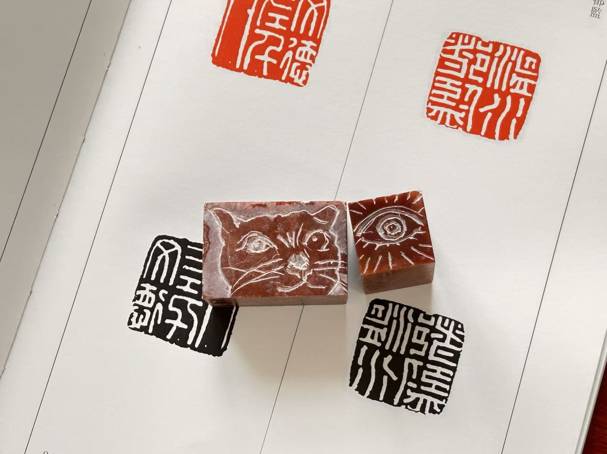
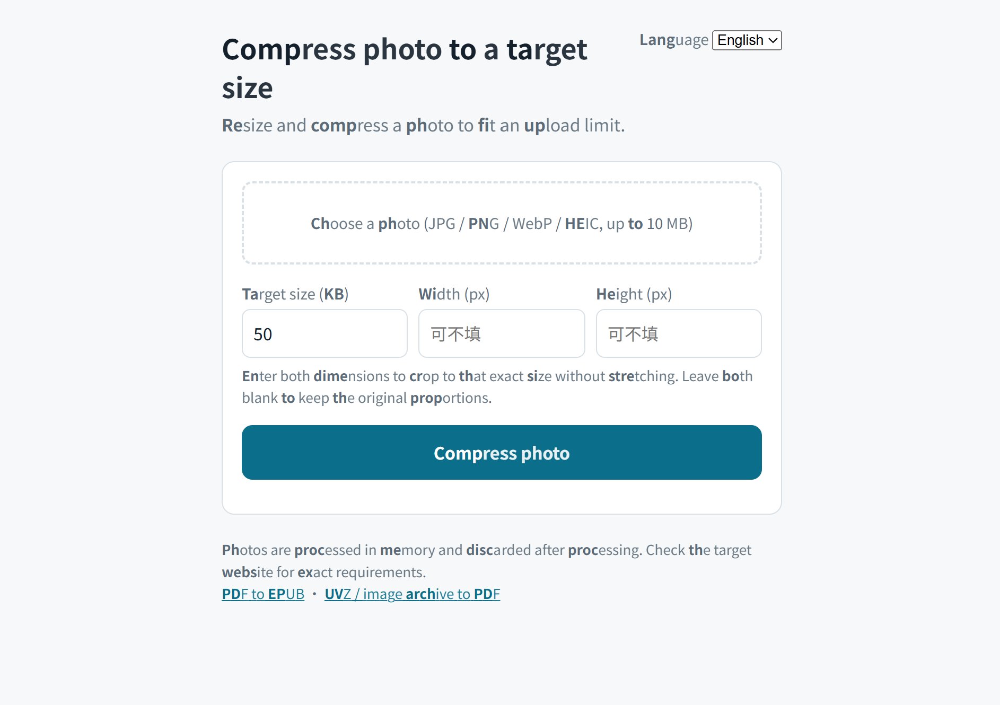

BOOK ARTS · 2026
Thread-bound Books and Case
A hand-bound book set with a fitted protective case. The full image sequence shows the books, unfolded case structure and finished form.
YU QIUYING · TIANJIN, CHINA
Selected work across printmaking, book arts, drawing and small digital experiments.
Explore selected work ↓SELECTED WORK
2024—2026
BOOK ARTS · 2026
A hand-bound book set with a fitted protective case. The full image sequence shows the books, unfolded case structure and finished form.

DIGITAL STUDY · 2026
An interactive personal study tool for exploring the Yijing, its hexagrams, commentaries and classical references.
Open project ↗
ETCHING · 2026
An etching study bringing together the Statue of Liberty, script and layered imagery. The printed impression is shown alongside the plate; the print did not resolve as intended.

DRYPOINT · 2026
Drypoint study based on a sculptural image. The source form is reinterpreted through line, overlap and dense surface.

STUDY AFTER A MURAL · 2026
A study of a detail from the south wall of the main chamber, Mogao Cave 217. Presented as a copy study, not an original mural or conservation treatment.

CHARCOAL ON PAPER · 2024
A course assignment observing a seated model within the shared space of a painting studio.

FIGURE DRAWING · 2024
A sustained observational drawing study of posture, proportion and folded clothing.

SEAL CARVING STUDY · 2025
A set of seal-carving exercises exploring positive and negative forms through carved marks and printed impressions.

PERSONAL SOFTWARE · AI-ASSISTED
A browser-based image tool. Select a photo, set a target file size and download the compressed result. Processing stays on your device.
Try the tool ↗ABOUT
Fourth-year student in Conservation and Restoration at Tianjin Academy of Fine Arts. Age 21.
My work moves between material practice and digital experiments, with an interest in how objects, images and texts carry memory.
Instagram ↗